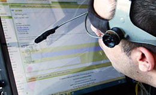
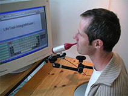
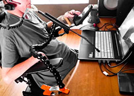

Assistive Technology
People with disabilities often employ alternative technologies and tools that assist them in completing everyday tasks. These tools, often referred to as assistive technology (AT), provide ways for users to experience and interact with websites, documents, forms, and other technologies.
As useful as these tools are, AT by itself cannot make an inaccessible system accessible. AT can help users interact with technology, but the technology must be built without accessibility barriers.
Screen Readers
Screen reading software allows people with vision impairments to access information on the computer. People who find reading difficult or who want to listen while they drive or multitask also use screen readers.
Screen readers use text-to-speech or text-to-braille technology to translate the text on a page. Because screen readers can only interpret text, it is very important that all multimedia (such as images) include alternative text equivalents.
Watch this brief (>1 min) video to learn more about screen reader technology.
Screen Magnifiers
People with limited vision can use screen magnifiers to enlarge their displays. Screen magnifiers can be software or hardware based and can magnify all or part of a screen. Your computer's operating system probably includes both magnification and high-contrast display as part of its accessibility settings.
Watch this brief (2 min) video to learn more about one of the most common screen magnifiers.
Voice Recognition
Voice recognition software allows people with limited dexterity or mobility to operate technology with voice commands and dictation. In addition, many people withoutdisabilities use voice assistants (e.g., Amazon’s Alexa, Apple's Siri, and Google Assistant) on their smartphones and other Internet-connected devices for convenience.
Watch this brief (1 min) video to learn more about voice recognition technology.
Captions
Captions allow those who are deaf or hard of hearing to access the audio content in multimedia. In addition, many people without hearing impairments use captions--for instance, in very noisy (or very quiet) environments, when the speaker has a thick accent, or as a study aid. On the web, search engines are able to index captions, resulting in higher SEO rankings.
Watch this brief (>1 min) video to learn more about captions.
Alternative Input Devices
Many people with visual and mobility impairments find it difficult to accurately point with a mouse or tap a screen. These users can interact with a computer or mobile device with an alternative input device, such as:



These alternate inputs work well for many users, but only if the technology allows for both mouse and keyboard navigation. For instance, adding Javascript that only responds to onmouseOver events introduces a barrier and makes a webpage inaccessible.
and take the quiz